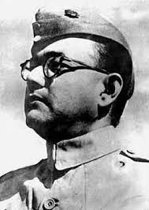

Subhas Chandra Bose was born to Prabhavati Bose (née Dutt) and Janakinath Bose on 23 January 1897 in
Cuttack—in what is today the state of Odisha in India, but was then the Orissa Division of Bengal
Province in British India. Prabhavati, or familiarly Mā jananī (lit.'mother'), the anchor of
family life, had her first child at age 14 and 13 children thereafter. Subhas was the ninth child and
the sixth son. Jankinath, a successful lawyer and government pleader, was loyal to the
government of British India and scrupulous about matters of language and the law. A self-made man from
the rural outskirts of Calcutta, he had remained in touch with his roots, returning annually to his
village during the pooja holidays.What is Subhas Chandra Bose known for? Subhas Chandra Bose (also
called Netaji) is known for his role in India's independence movement. A participant of the
noncooperation movement and a leader of the Indian National Congress, he was part of the more militant
wing and known for his advocacy of socialist policies.